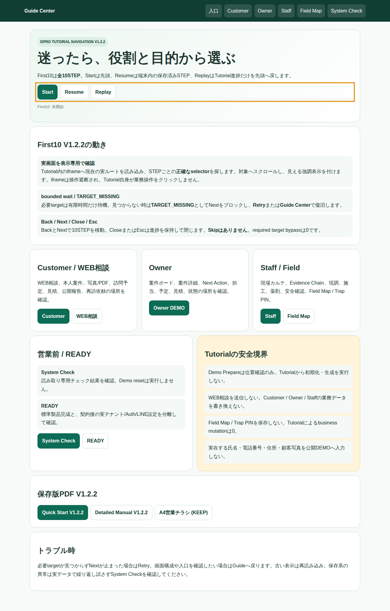
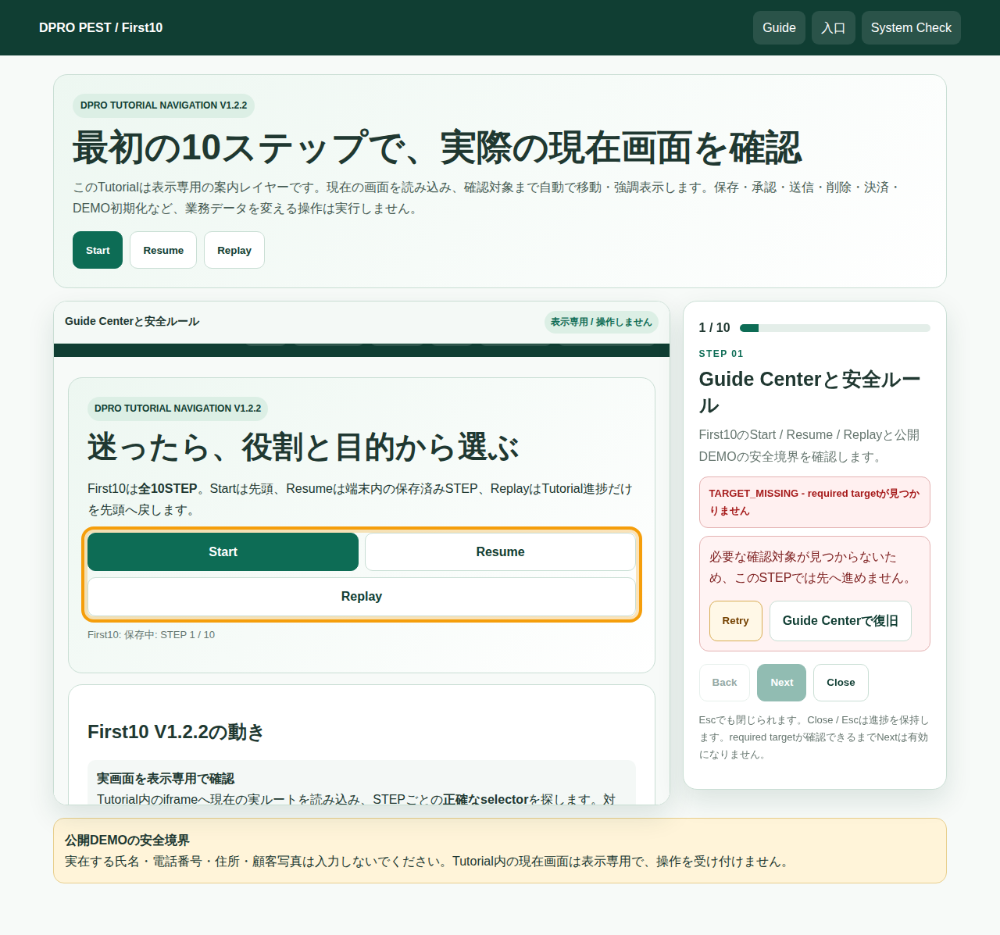

DPRO #54 環境衛生・ペストコントロール
Support V1.2.2
Quick Start - First10を安全に始める
Tutorial V1.2.2は全10STEP。実際の現在画面をiframeへ読み込み、STEPごとの正確なtarget selectorまでスクロールして強調表示します。Tutorialは表示専用です。

Start / Resume / Replay
- Start: STEP 01から開始
- Resume: 保存済みSTEPから再開
- Replay: Tutorial進捗だけを先頭へ戻す
安全境界
Demo Prepare実行、相談送信、Customer/Owner/Staff更新、Field Map/Trap PIN保存はTutorialから実行しません。business mutation = 0。
DPRO #54 環境衛生・ペストコントロール
Support V1.2.2
10STEPの見方
01 Guide / SafetyStart/Resume/ReplayとDEMO安全
02 Demo Prepare位置確認のみ。実行禁止
06 Owner Next Action状態確認領域
07 Staff 現場カルテEvidence/現調/施工/薬剤/安全
08 Field Map / Trap PIN位置確認。保存禁止
09 System Check読み取り専用結果確認
移動
Back / Nextで移動。Close / Escは進捗を保持します。Skipはなく、required target bypassは0です。
DPRO #54 環境衛生・ペストコントロール
Support V1.2.2
Nextが進まない時
required targetは有限時間だけ待機します。現在ルートまたは正確なselectorが見つからなければTARGET_MISSINGとなり、Nextはブロックされます。

Retry
同じcurrent route / selectorをもう一度確認します。targetが確認できるまでNextは有効になりません。
Guideへ戻る
入口、役割、System Check、READY、安全ルール、保存版PDFをGuide Centerから確認できます。
Quick: A4縦 3ページSkip: なしMutation: 0Required bypass: 0